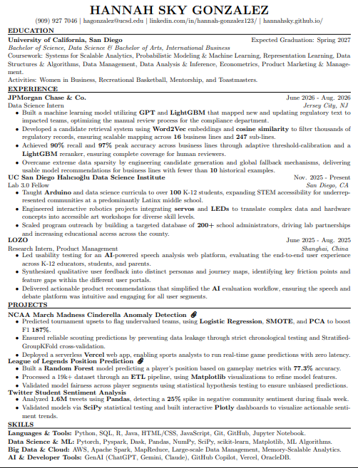

Coursework: Systems for Scalable Analytics, Probabilistic Modeling & Machine Learning, Representation Learning, Data Structures & Algorithms, Data Management, Data Analysis & Inference, Econometrics, Product Marketing & Management.
Activities: Women in Business, Recreational Basketball, Mentorship, and Toastmasters.
